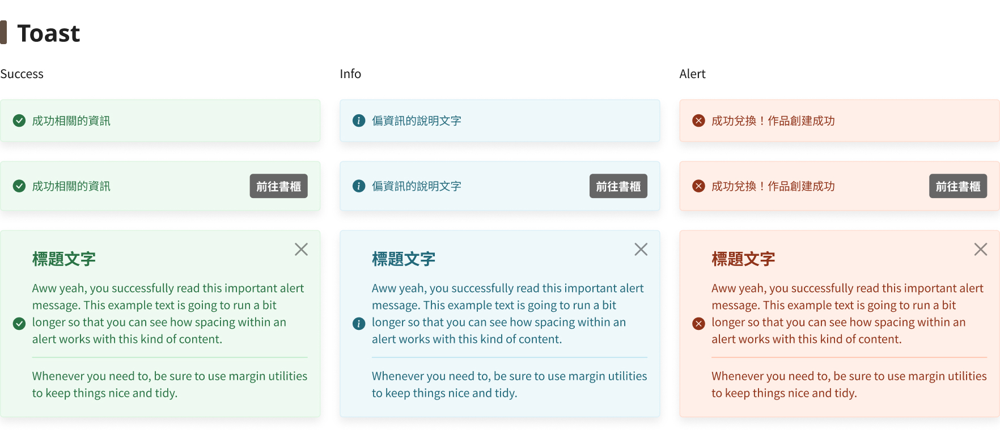

概述 Overview
點點印｜登入註冊+帳號設定頁面
#B2C #RWD #Redesign
Team | TinTint 點點印
Role | UIUX Designer
Collaborators | UIUX Designer(1)、PM(1)、FE(1)、BE(1)、CS(2)
- 背景：針對平台入口體驗進行重構，旨在解決帳號品質對後續營運造成的隱形成本，為產品長遠營運打下穩定基礎。
- 痛點：舊版因缺乏防護機制導致無效帳號氾濫，大幅增加物流與客服的營運負擔。
- 優化：透過「分層驗證」策略與安全防禦體系，在維持註冊轉換率的同時，確保數據的真實性與安全性。
- 背景：針對架構冗餘的帳號系統進行重組，提升資訊管理的直覺性，並強化用戶主動維護資料的意願。
- 痛點：層級重疊導致用戶認知負荷過重，且關鍵驗證入口隱蔽，造成帳號長期處於不安全狀態。
- 優化：扁平化導航路徑並導入場景化佈局，搭配主動引導機制，確保核心功能的可達性與操作一致性。
設計
流程
Empathize
✦ Empathy Map
✦ Personas
✦ User Story Maps
✦ Interview Method
✦ Competitive Audit
Define
✦ Value Proposition
✦ Information Architecture
Ideate
✦ Story Board
✦ User Flow
Wireframe
✦ Wireframe
✦ Lo-Fi Prototype
✦ Usability Test
UI Design
✦ Visual Design System
✦ UI Kit
Prototype
✦ Mockup
Test
✦ Usability Test
✦ QA
舊版痛點與觀察 Pain Point & Task
- 營運數據與安全威脅：驗證機制薄弱導致無效帳號氾濫與數據失真，增加物流客服成本；且因缺乏 reCAPTCHA 與足夠驗證強度，面臨自動化攻擊與活動公平性受損的風險。
- 視覺導航與品牌失焦：促銷雜訊干擾註冊主路徑；搭配過時沉重的配色與不明確的資訊層次，易造成用戶視覺疲勞並中斷流程。
- 核心驗證流程斷層：驗證入口隱蔽且缺乏主動狀態提示，導致用戶習慣性忽略關鍵驗證步驟，成為無效帳號的主要來源。
- 高摩擦的交互細節：驗證碼樣式誤導、缺乏密碼顯示功能及按鈕間距過窄，顯著提升了操作錯誤率與誤觸風險。
- 支援指引機制匱乏：註冊卡關時缺乏 FAQ 或即時協助導引，導致用戶因挫折感而直接流失。
- 架構冗餘與路徑斷層：驗證功能遭孤立於底層且缺乏導引，導致大量帳號未驗證，增加營運風險；架構層級重疊則造成資訊分類混淆，提升定位功能的難度。
- 綁定引導與動線破碎：第三方綁定視覺權重不明且狀態辨識度低；搭配支離破碎的版面配置，大幅拉高了用戶的頁面學習成本。
- 設計語意與規範缺失：色彩語意誤用（如成功狀態顯示危險色）引發用戶焦慮；組件規則不一則導致介面語意模糊，削弱了品牌專業感。
- 交互機制與引導不足：表單缺乏 Placeholder 與密碼顯示等現代標準功能，導致輸入效率低下且容易出錯。


設計優化重點
登入註冊：轉化率與數據安全的雙贏重構
- 視覺重塑與去干擾： 導入卡片式現代佈局與簡約色彩規範，排除廣告干擾以強化註冊主路徑的視覺專注度。
- 「分層驗證」彈性策略： 實施註冊階段可「稍後驗證」的機制以維持轉換順暢度，並於核心行為前設置門檻以平衡安全性。
- 全方位防禦體系： 整合 Email/SMS 雙軌制驗證與 Google reCAPTCHA 隱形防護，從源頭杜絕無效帳號與自動化攻擊。
- 交互細節優化： 新增密碼顯示/隱藏功能並拓寬操作間距，降低行動端用戶的誤觸率與操作摩擦。
帳號設定：資訊架構扁平化與場景化佈局
- 路徑扁平化與 Tab 分類： 將設定項整合為直覺的 Tab 切換結構，消除層級重疊並降低功能尋找成本。
- 場景化適配佈局： 針對一般設定採用 Tab 架構 以利快速切換，針對帳號綁定則採 左右分欄佈局 以強化權屬辨識。
- 主動引導與狀態提示： 導入全站式 Announce Bar 提醒未驗證狀態，確保核心功能的可達性與用戶主動驗證意願。
- 標準化反饋與語意： 統一 UI 元件規範與色彩語意（如校正錯誤的 Danger Color），建立一致且專業的系統操作語意。
- 跨產品價值延伸： 新增「重要日」設定並串接 Editor 2 編輯器，實現個人資料自動同步至作品的生態體驗。

資訊架構 Solution


User Flow+Wireframe
登入註冊：新增驗證流程
解決營運痛點
從源頭杜絕無效帳號，改善訂單資訊錯誤與活動洗讚等數據問題。
兼顧操作彈性
雖然增加了驗證環節，但提供「稍後驗證」選項，確保註冊過程依然順暢。
提升操作效率
移除舊版冗餘資訊並導入品牌延伸色，讓用戶能專注於當前動作，快速完成流程。
帳號設定：功能整合與體驗直覺化
整併驗證路徑
觀察到用戶習慣在資料旁尋找對應功能，因此移除低頻欄位，並將「帳號驗證」直接整合進 Email 與手機設定中，讓引導更符合直覺。
數據自動連動
針對編輯器需求新增「重要日」設定，並串接後端資料庫。用戶只需設定一次，即可同步至編輯流程，省去重複輸入的麻煩。
降低綁定時的焦慮感
發現舊版介面讓用戶擔心「點錯」或找不到入口，因此透過新佈局明確標示第三方帳號狀態，讓綁定流程變得安全且好上手。
UI Design
登入註冊
驗證流程優化：安全門檻與註冊流暢度的雙贏設計
Before
註冊
輸入資訊（Email、帳號、密碼）
原頁面
繼續進行原動作
After
註冊
輸入資訊（Email、帳號、密碼）
簡訊驗證
Email 驗證
稍後驗證
原頁面
繼續進行原動作
現代配色與焦點佈局強化引導
- 捨棄舊版沈重的深棕色，改用輕盈的淺棕色背景，讓品牌橘色按鈕更跳脫。
- 透過強化的視覺對比，創造直覺的 CTA 引導力，讓用戶操作時更輕鬆，同時減少註冊流程中的視覺疲勞。
- 為了強化註冊轉換，移除頁面上方分散注意力的促銷活動，將表單置於畫面視覺核心。
- 導入卡片式設計明確區分資訊區塊，協助使用者第一時間理解資訊架構，建立穩固的視覺錨點並減少流失率。
- 擴大欄位間距並優化按鈕與輸入框的比例，讓介面不僅具備呼吸感，更符合行動裝置的點擊慣性。


操作體驗與介面細節
針對輸入過程中的摩擦點進行細部修飾，提升轉化率。
輸入框易用性強化
- 新增密碼隱私開關： 新增「顯示/隱藏密碼」圖示，協助用戶快速校對，降低輸入錯誤率。
- 明確界線設計規則： 強化輸入框邊界與內距，確保在行動端能精確點擊。
社群帳號註冊優化
- 防誤觸設計： 重新規劃 LINE、Facebook、Apple、Google 按鈕間距，增加充足留白以避開下方的「服務條款」。
即時支援機制
- 新增「常見問題 (FAQ)」： 於右上角常駐幫助入口，讓遇到驗證碼或帳號問題的用戶能立即獲得指引。
驗證流程優化與安全防護
- 靈活雙軌驗證： 改採 Email 連結與 SMS 六位數驗證，提供情境自選並大幅提升註冊成功率。
- 確保數據精準： 強制通訊驗證從源頭杜絕無效帳號，解決訂單資訊錯誤與洗讚等營運痛點。
- 分層驗證策略： 實施「稍後驗證」維持註冊流暢感，於下單或高價值行為前設下門檻，平衡安全與轉換率。
- 自動化低負擔： 以點擊連結與簡訊自動填入取代手動輸入，降低行動裝置的出錯率與操作摩擦。
- 無感行為防護： 導入 reCAPTCHA 隱形攔截機制，在不干擾真人的前提下杜絕暴力破解。
- 多層次防禦機制： 配合錯誤次數限制與 IP 行為偵測，根除自動化腳本註冊，確保平台帳號品質。

帳號設定

場景化佈局與設計系統標準化
- Tab 式切換： 針對「基本資料」與「常用地址」等多類別資訊，採用 Tab 元件進行水平分類，維持介面清爽度。
- 左右分欄佈局： 針對「帳號綁定」頁面採用對稱佈局，將原生帳號與第三方帳號區隔。透過視覺對比解決舊版堆疊混亂造成的決策遲疑。
- 全站統一採用圓角卡片封裝資訊塊，強化區域感與視覺層次。
- 統一行高、對齊規範與 Toast 提示邏輯，建立一致的系統反饋機制，降低用戶的認知負擔。
資訊架構重組與流程自動化
針對未驗證用戶，於 Header 下方新增固定提示列，在維持操作彈性的同時，確保核心驗證功能的主動觸達。
重構帳號綁定邏輯，強化「一般帳號」連結權重，並導入智慧偵測機制導引重複帳戶整合，減少多組帳密管理負擔。
於《基本資料》中新增「重要日」設定並串接 Editor 2 編輯器，實現個人資料自動同步至作品（如月曆），創造跨功能的生態體驗。
視覺導引與品牌精緻度提升
運用品牌色（橙色/咖啡色）按鈕定義視覺權重，精確指引「立即綁定」或「確認更新」等核心行動。
重新調校導覽列、頭像與組件細節，確保視覺語言與品牌特有的咖啡色系高度調和，展現專業的細節質感。
Style Guide
區塊間距與空間感提升
[Before]
區塊間距不足，內容過於緊湊，降低閱讀舒適度。
[After]
重新定義標題層級與留白比例，提升排版呼吸感。同時整合操作相關功能至同一區塊，優化瀏覽動線與資訊架構。
統一圓角與陰影，強化介面質感
[Before]
版面分隔生硬、缺乏層次，與品牌期望傳遞的溫潤調性不符。
[After]
運用圓角與留白展現親和力，結合陰影設計強化層次，讓視覺體驗更加立體聚焦。
視覺層次更清晰，資訊組織更有條理
[Before]
元素密集、配色偏重，缺乏明確的視覺引導，使用者需反覆搜尋資訊，增加認知負擔。
[After]
強化卡片與背景對比，運用色彩引導關鍵操作，讓資訊層級一目了然，提升閱讀效率。


UI Kit


Takeaway
從視覺裝飾轉向產品策略的思維重構
在這次優化中，我深刻體會到設計不只是解決「畫面的美醜」，更是解決「營運的痛點」。透過分析無效帳號與數據失真問題，學會將驗證機制視為一種策略工具，用來降低客服與物流的隱形成本，而不僅僅是介面上的功能增減。
安全感與順暢度的適度平衡
好的體驗不是完全消除門檻，而是更有彈性地篩選用戶。透過「分層驗證」確保註冊流暢不被打斷，並在關鍵環節才執行安全把關。這種節奏的拿捏，讓我們能兼顧註冊轉換率與數據的營運品質。
以「場景化佈局」重構資訊架構的直覺
針對帳號設定，我根據資訊密度選擇了適配性佈局：一般設定採用 Tab 架構 以利快速切換，帳號綁定則採 左右分欄 強化權屬對比。透過視覺語義直接引導行為，能讓繁雜的資訊變得井然有序。
顧及標準化與細節
一致的 UI 規範與精準的色彩語意，是建立用戶信任的隱形橋樑。透過校正誤用的色彩（如 Danger Color）並統整組件規則，讓產品更有專業感。這些細節的微調能大幅降低認知的負擔，讓使用者在操作時感到更踏實。
標題預設值
描述文字預設值